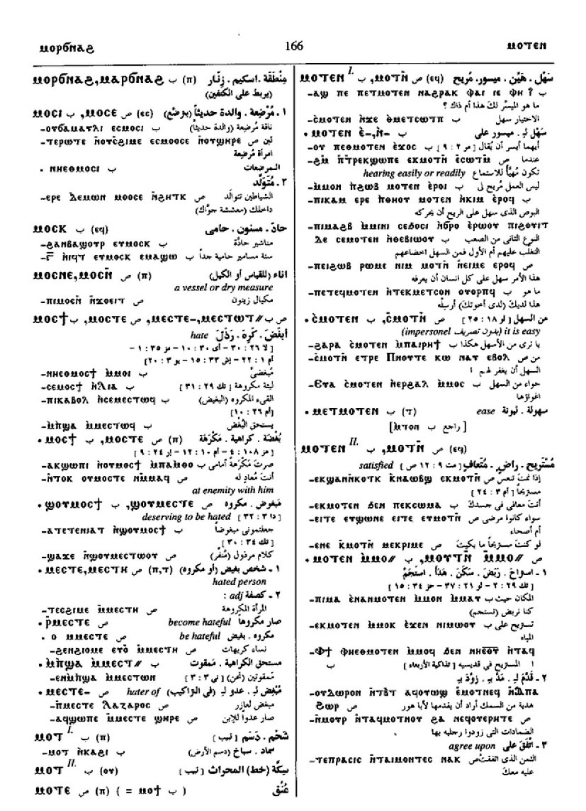
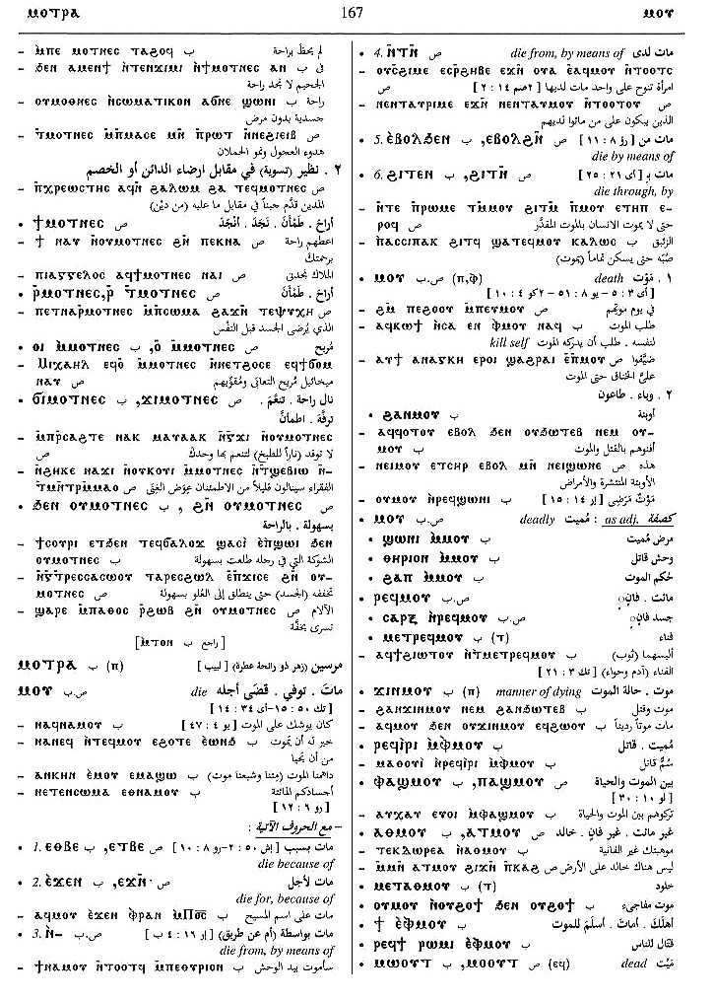

(verb)
intr: be at rest, at ease, be relieved of sickness
[αναπαυεσθαι, υγιαζειν, ευξυχειν,
ησυχαζειν]
qual: easy, hale, satisfied [υγιησ, ισχυων]
tr (refl):
― rest self [αναπαυεσθαι, αναλυειν, αναξυχειν]
― go to rest, die [τελεουσθαι, αναλυειν]
qual: easy, hale, satisfied [υγιησ, ισχυων]
tr (refl):
― rest self [αναπαυεσθαι, αναλυειν, αναξυχειν]
― go to rest, die [τελεουσθαι, αναλυειν]
(S, B)
ⲙⲧⲟⲛ
(S, B) ⲉⲙⲧⲟⲛ
(A, sA, F) ⲙⲧⲁⲛ
(F) ⲉⲙⲧⲁⲛ
(S) ⲙⲟⲧⲛ+
(A) ⲙⲁⲧⲛⲉ+
(B) ⲙⲟⲧⲉⲛ+
(F) ⲙⲁⲧⲛ+
(S, B) ⲉⲙⲧⲟⲛ
(A, sA, F) ⲙⲧⲁⲛ
(F) ⲉⲙⲧⲁⲛ
(S) ⲙⲟⲧⲛ+
(A) ⲙⲁⲧⲛⲉ+
(B) ⲙⲟⲧⲉⲛ+
(F) ⲙⲁⲧⲛ+
| intr :4397 | Crum: 193b | ||||||||
| c ⲉ- | as dat commodi5630 | ||||||||
| qual :5626 | |||||||||
| c ⲉ- | easy to, to be [ευ-]5627 | Crum: 194a | |||||||
| {impersonal} ⲥⲙⲟⲧⲛ | it is easy5628 | ||||||||
| c ⲛ- | meaning as with ⲉ-5629 | ||||||||
| (S, B)
― ⲉϫⲛ-,
― ⲉϫⲉⲛ-
(S) ― ⲉϩⲣⲁⲓ ⲉϫⲛ- |
rest upon, be satisfied with [αναπαυεσθαι, παρακαλεισθαι]4398 | ||||||||
| (S, F) ― ⲙⲛ- | meaning same4399 | ||||||||
| (S) ― ⲛϩⲏⲧ | be at rest, be content
as nn S,B, rest, satisfaction4400 |
||||||||
| (S, A, sA, B, F) ― | (noun male)
rest, ease, relief [αναπαυσισ]966 |
Crum: 194b | |||||||
| (S) ⲙⲁⲓⲙ. | loving ease967 | ||||||||
| (S)
ϩⲛⲟⲩⲙ.
(B) ϧⲉⲛⲟⲩⲙ. |
as advb, with ease, easily968 | ||||||||
| (B) ⲁⲧⲉⲙ. | unquiet [ακαταλλακτοσ]969 | Crum: 195a | |||||||
| (S, B) ⲙⲁ ⲛⲙ. | place of resting [αναπαυσισ, αναξυχη]970 | ||||||||
| (S) ϭⲓⲛⲙ. | resting, death971 | ||||||||
| (S, B) ⲣ ⲙ., ⲉⲣ ⲙ. | be, set at rest, ease972 | ||||||||
| (S, A, sA, B, F) ϯ ⲙ. | set at ease, content, set a pause973 | ||||||||
| (S, F) ϯ ⲉⲡⲉⲙ. | become eased974 | ||||||||
| (S, B) ϫⲓ ⲙ., ϭⲓ ⲙ. | get rest, be at ease975 | ||||||||
| (S) ⲙⲟⲧⲛ | (noun male)
health, ease976 |
||||||||
| (S)
ⲙⲟⲧⲛⲉⲥ,
ⲙⲟⲧⲛⲥ
{ext Asketikon of Apa Ephraim; 1065; 3; 5;
ⲣϣⲁⲛ ⲟⲩϩⲏⲕⲉ
ⲉⲓ ⲉ
ϩⲟⲩⲛ ⲉϥϣⲓⲛⲉ
ⲛⲥⲁ ⲟⲩⲙⲟⲧⲛⲥ
ⲉⲛϥⲥⲟⲟⲩⲛ ⲙⲙⲟⲥ
ⲁⲛ; Ext}, {Asketikon of Apa Ephraim; 1065;
3; 23; ⲧⲛϣⲓⲛⲉ ⲛⲥⲁ ⲧⲛⲙⲟⲧⲛⲥ ϩⲛ ϩⲱⲃ ⲛⲓⲙ; Ext}
(Sa, Sf, F) ⲙⲁⲧⲛⲉⲥ (B) ⲙⲟⲑⲛⲉⲥ |
(noun female)
ease, contentment [αναπαυσισ] satisfaction, equivalent of debt &c S977 |
||||||||
| (S) ϯ ⲙⲟⲧⲛⲉⲥ | give relief978 | Crum: 195b | |||||||
| (S) ⲣ ⲙ. | set at ease979 | ||||||||
| (S, B) ϫⲓ ⲙ., ϭⲓ ⲙ. | get relief, satisfaction980 | ||||||||
| (S, B, F) ϩⲛⲟⲩⲙ., ϧⲉⲛⲟⲩⲙ. | as advb, with ease, easily [ευχερωσ, ευκολωσ]981 | ||||||||
See also:
Opposite:
| view | (S) ϩⲗⲟϭ (A, sA, F) ϩⲗⲁϭ (Sa) ϩⲗⲁⲕ (B) ϩⲗⲟϫ (S) ϩⲟⲗϭ+ (Sf) ϩⲁⲗⲗⲉϫ+ (A, sA, F) ϩⲁⲗϭ+ (sA, F) ϩⲁⲗⲉϭ+ (B) ϩⲟⲗϫ+ (F) ϩⲁⲗϫ+ (S, sA) p c ϩⲁⲗϭ- (sA) p c ϩⲗϭ- | (verb) intr: be sweet, take
delight [γλυκαινεσθαι, ηδυνειν]
qual: [γλυκοσ]718 |
Opposite:
| view | (S, B) ⲛϣⲟⲧ, ⲉⲛϣⲟⲧ (A) ⲛⳉⲁⲧ (S, A, B, F) ⲛⲁϣⲧ+ (A) ⲛⲁⳉⲧ+ (F) ⲛⲉϣⲧ+ (S, B, F) p c ⲛⲁϣⲧ- (A) p c ⲛⲁⳉⲧ- | (verb) intr: be hard, strong, difficult & related meanings [σκληροσ ειναι, σκληρυνειν, βαρυνειν]1218 |
Crum: 193,
194, 195

193

194

195
Dawoud: 166a-167a,
183a-184b, 172b,
139a, 36b, 162a

166

167

183

184

172

139

36

162